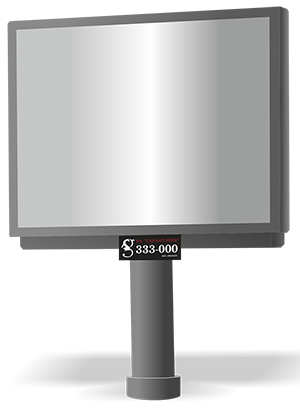

Реклама на Видеоэкранах
Видеоэкранах (LightScreen) — высокотехнологичный, современный, цифровой вид наружной рекламы. Позволяют проводить яркие, эффективные, запоминающиеся кампании самых разных мероприятий, товаров и услуг. Отлично подходит для анонсов специальных предложений и акций.
Видеоэкран является прекрасной альтернативой телевизионной рекламе. Размещение рекламы на видеоэкранах в городе Ижевск будет особенно выгодно для рекламодателей, так как расположены они на пересечении самых оживленных улиц центральной части города, таким образом, можно обеспечить широкий охват аудитории из самых разных социальных групп.
Важной особенностью является тот факт, что реклама на видеоэкранах действует «мягко», не вторгаясь в личное пространство человека, и заявляет о себе легко. Длительность видеороликов может варьироваться от 5 до 30 секунд.
Преимущества светодиодных видеоэкранов в качестве рекламных площадок
- Большая площадь рекламного поля. Уличные видеоэкраны отлично просматриваются даже с дальнего расстояния, что позволяет рекламе охватывать максимальную аудиторию;
- Удачное место расположения. Видеоэкраны устанавливаются на крупных улицах и перекрестках, где в любое время наблюдается большой поток пешеходов, а также образуются транспортные пробки, стоя в которых люди всегда обращают внимание на рекламу;
- Широкий охват аудитории. Реклама на видеоэкранах демонстрируется и проходящим мимо пешеходам, и автомобилистам, и проезжающим в городском транспорте людям;
- Динамичность и яркость изображения. Видеоролики привлекают внимание людей гораздо больше, чем статичные рекламные материалы. Реклама на экране отлично видна даже в пасмурную погоду и с наступлением вечера;
- Гибкий формат размещения. При размещении на уличных LED-экранах вы можете неограниченно варьировать время показа рекламы и ее содержание, если хотите повысить ее эффективность. Также вам предоставляется возможность заказать одновременную трансляцию разных роликов на одном носителе;
- Интерактивность. Благодаря использованию современных технологий можно устанавливать обратную связь с аудиторией.
Выбрать конструкцию на карте для размещения видео
По вопросам размещения звоните +7 (3412) 333-000